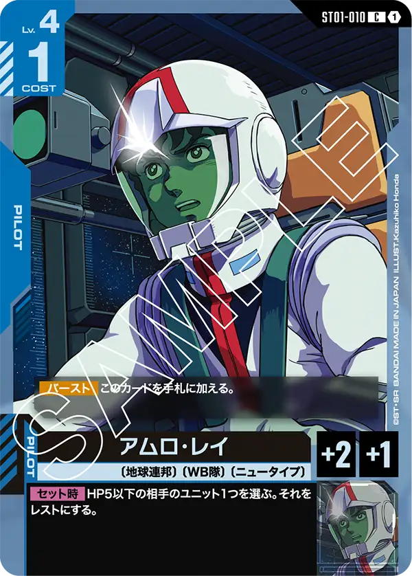
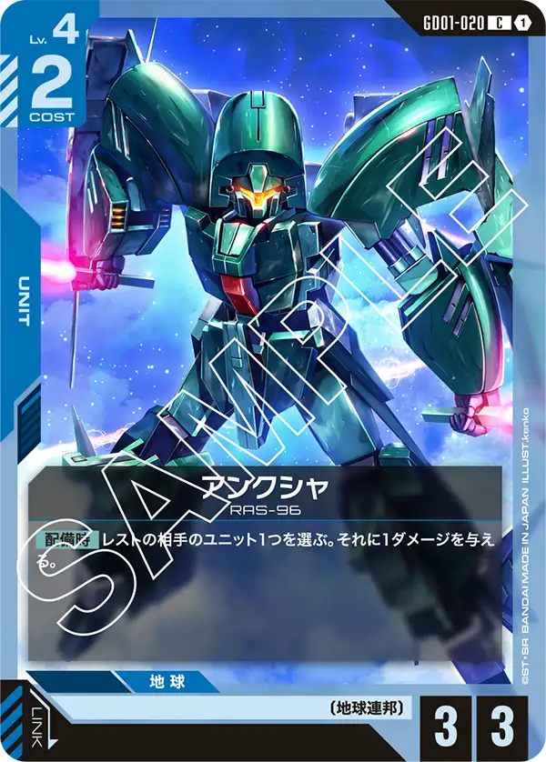
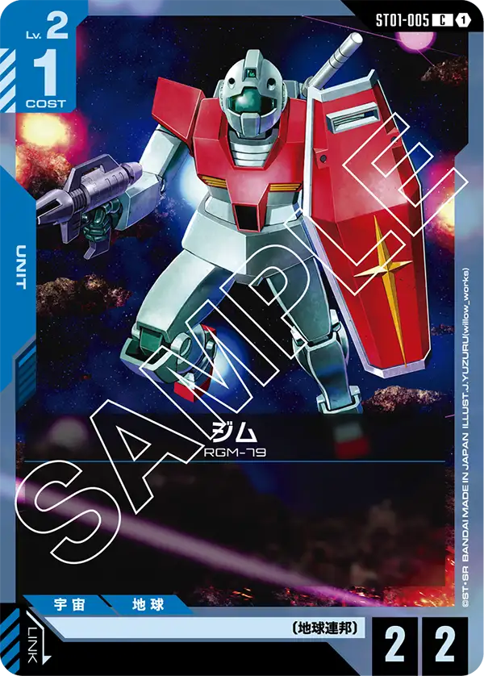

中部地域の環境サマリー
中部地域では11イベントが開催され、TOP4入賞44デッキを集計。青/紫がシェア34.1%で首位ですが、全国平均より低く多様なデッキが入賞する環境です。
デッキタイプ分布
- 青/紫: 15デッキ（シェア34.1%、優勝4回、優勝率26.7%）（全国比-2.2pt）
- 赤/白: 7デッキ（シェア15.9%、優勝2回、優勝率28.6%）（全国比+0.7pt）
- 青/緑: 6デッキ（シェア13.6%、優勝2回、優勝率33.3%）（全国比+2.1pt）
- 緑/白: 6デッキ（シェア13.6%、優勝1回、優勝率16.7%）（全国比-0.8pt）
- 青/赤: 4デッキ（シェア9.1%、優勝0回、優勝率0.0%）（全国比+3.2pt）
- 緑/紫: 2デッキ（シェア4.5%、優勝1回、優勝率50.0%）（全国比+3.0pt）
- 赤/緑: 2デッキ（シェア4.5%、優勝1回、優勝率50.0%）（全国比+1.9pt）
- 青/白: 1デッキ（シェア2.3%、優勝0回、優勝率0.0%）（全国比-4.7pt）
- 白/紫: 1デッキ（シェア2.3%、優勝0回、優勝率0.0%）（全国比+0.1pt）
中部の特徴は青/緑のシェアが13.6%と全国平均を上回り2回優勝している点。緑/紫がシェア4.5%ながら1回優勝と、少数派デッキの活躍が目立ちます。青/赤がシェア9.1%ながら優勝0回と、中部では勝ちにつながっていません。
注目カード

アムロ・レイST01-010
青系デッキ内採用率96.6% — 中部でも青系デッキの鉄板パイロット

アンクシャGD01-020
青系デッキ内採用率82.8% — 全国を大幅に上回る採用率。中部の青/紫ではアンクシャが定番のUNIT

ジムST01-005
青系デッキ内採用率72.4% — 全国を上回る採用率の青のUNIT
優勝デッキの傾向
中部では多色デッキの活躍が顕著。緑/紫での優勝は全国的にも珍しく、中部プレイヤーの構築力の高さがうかがえます。アンクシャ(GD01-020)の採用率が高いのは中部メタにおけるミッドレンジ志向の表れです。
今後の展望
多様なデッキが活躍する中部では、コルシカ基地制限後もバランスの取れた環境が維持されると予想されます。